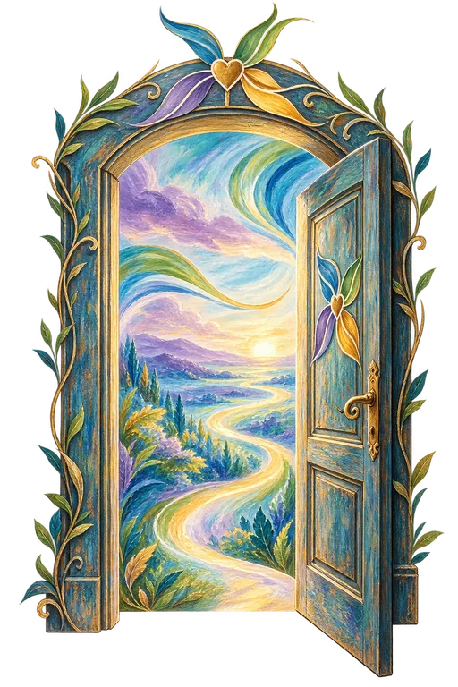

Le Moulin de Laure
Le lien prend vie.
Au cœur du lien, au-delà des sens. Quatre univers pour explorer le vivant, les êtres chers et soi-même.
Entrer dans les univers
Un chemin de cœur et quatre ailes.
Chaque univers possède sa couleur, son œuvre, son rythme. Le lien les traverse tous.
Écureuil · vivant
Terre
Communication animale
Un autre regard sur la relation avec votre animal.
Entrer dans l’univers


Un jardin, d’autres rencontres.
Le Jardin du Moulin accueillera des professionnels croisés sur le chemin de Laure, avec leur accord.
Le Journal.
Un espace de lecture pour les futurs articles du Moulin.